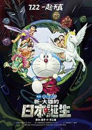

新·大雄的日本誕生

2016年最新的哆啦A夢電影《新‧大雄的日本誕生》，承襲哆啦A夢史上觀影人數最高紀錄的舊作，不僅有波瀾壯闊的史前場景，有大雄跟古古兒與 3 隻寵物的深厚情誼，更有大雄從沒用的人，省思、掙扎而成長為有用的人的青春歷程。本作配樂動聽、畫質更新、對白幽默，是會讓人會心一笑的優質作品。
在創造出只屬於自己的樂園，並用道具做出許多可愛的寵物，好好地玩個過癮之後，他們總算回到現代的家中，卻與原始人古古兒相遇了。古古兒似乎是因為被捲進時空亂流才來到現代的，而在原始時代，古古兒一家人所屬的光族，卻正被「精靈王」巨尊比所率領的黑暗族襲擊！
怎麼辦？不用猶豫了！與古古兒一起回到原始時代拯救光族吧！以史上最大的離家出走為起點，史上最大的冒險就要開始了！